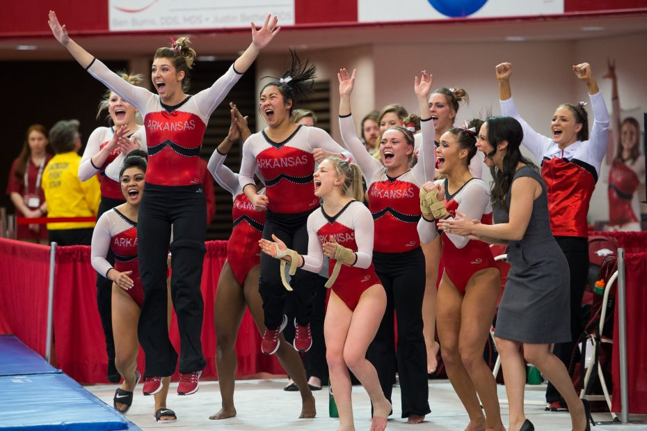
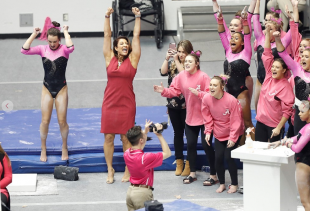
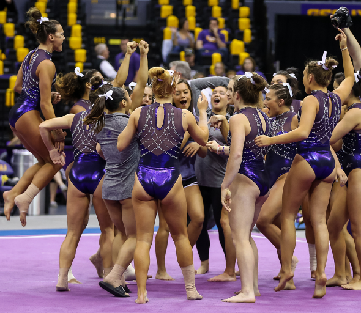

 College gymnastics is very differnt than normal club or high school gymnastics. The hii atmosphere is different and the training is different as well. College gymnastics is founded on the idea of teamwork, friendships, and dedictaion. All college gymnasts are talented and well-rounded but without the support of their team, they would go nowhere.
 College gymnastics is very differnt than normal club or high school gymnastics. The atmosphere is different and the training is different as well. College gymnastics is founded on the idea of teamwork, friendships, and dedictaion. All college gymnasts are talented and well-rounded but without the support of their team, they would go nowhere.
 College gymnastics is very differnt than normal club or high school gymnastics. The atmosphere is different and the training is different as well. College gymnastics is founded on the idea of teamwork, friendships, and dedictaion. All college gymnasts are talented and well-rounded but without the support of their team, they would go nowhere.